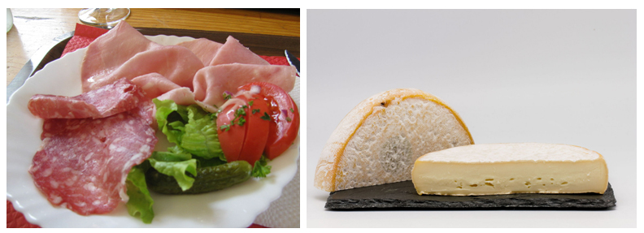
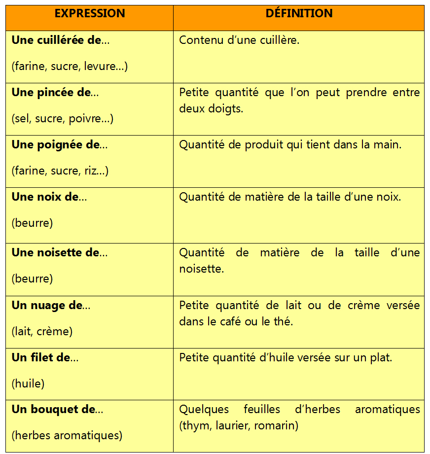

Gastronomie
Vocabulaire Quantités
Les quantités

Photo 1 : Charcuterie de Savoie par JPS68. Sous licence Creative Commons Attribution-Share Alike 4.0 https://commons.wikimedia.org/wiki/File:Charcuterie_de_Savoie.JPG
Photo 2 : Reblochon fermier par Pierre-Yves Beaudouin / Wikimedia Commons / CC BY-SA 4.0. Sous licence Creative Commons Attribution-Share Alike 4.0. https://commons.wikimedia.org/wiki/File:Reblochon_11.jpg
Dans les recettes de cuisine, les quantités des ingrédients ne sont pas toujours très précises. On utilise alors des expressions.

Pour en savoir plus!
Pour réviser: https://www.lepointdufle.net/p/articles.htm#quantite